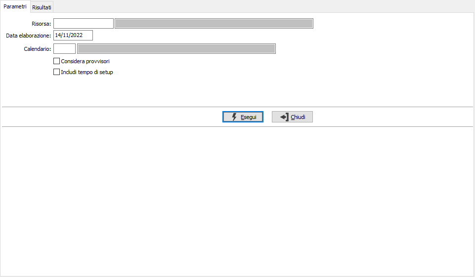
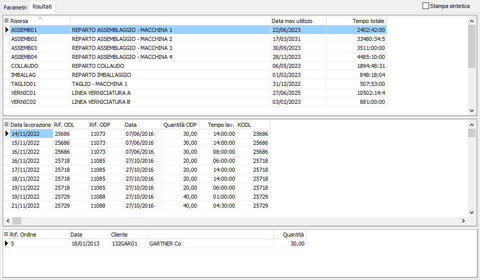

Analisi carichi risorse
La funzione consente di ottenere, direttamente dai dati elaborati dal piano (quindi basati su calcoli a capacità infinita), la teorica occupazione delle risorse. In pratica gli ODL vengono trattati sulla risorsa indicata sull’ODL; in base al tempo di lavorazione ed in base al calendario viene determinata l’occupazione di ciascuna risorsa; in questa analisi sono ignorati i vincoli di fase (lo scopo dell’analisi è quello di dare un’idea di massima delle ore di impegno di ciascuna risorsa senza scendere nello specifico delle date di produzione).
E' possibile indicare una singola risorsa o tutte, specificare un calendario (se vuoto viene utilizzato il calendario aziendale) e decidere di considerare nell'analisi anche gli ODL provvisori spuntando la relativa casella. Apponendo la spunta alla casella "Includi tempo di setup" saranno conteggiati nei tempi di lavorazione anche gli eventuali tempi di setup previsti dal ciclo.
Nell’analisi se per gli ODP sono presenti più fasi (più ODL) questi sono considerati attivi fino a quando non viene rientrata completamente la fase mentre per l’ultima fase sono considerati anche i versamenti parziali.

Effettuando la selezione vengono mostrati i risultati; nella griglia superiore compaiono i dati relativi alla singola risorsa con il tempo totale di occupazione, nella griglia di mezzo il dettaglio delle occupazioni giornaliere per singolo ODL e nella griglia in basso i riferimenti agli ordini/RDP collegati all'ODL. Il pulsante Stampa consente di stampare i dati presenti, spuntando la casella "Stampa sintetica" sarà stampata solo la parte relativa alla griglia superiore.
